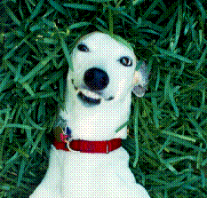
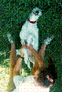
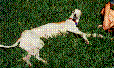
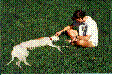
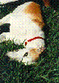
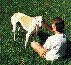
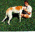
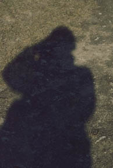

JESSE, Lab MascotNée Commera (w. 22 October 1989, s. Crimson Falcon, d. Sports Affair). Jesse retired to Austin after a successful racing career in Wisconsin and Florida. She now makes her home in Lafayette, Colorado. For information about adopting ex-racing greyhounds contact Greyhound Pets of America at (800) 366-1472. Adoption information is also available at Greyhound Adoption Group Pages Hall of Fame, Greyhound Pets of America California Adoption Center, and USA Defenders of Greyhounds .







Ken "El Jefe" Foote Lab Director and fearless leader. E-mail: k.foote@mail.utexas.edu
Last Revised 2000.3.27. LNC.